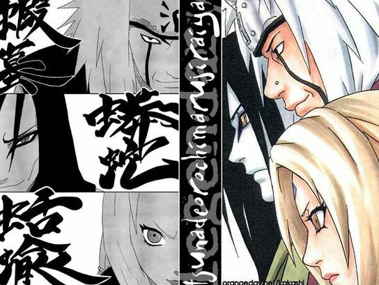

나루토에 등장하는 전설 레벨의 실력을 가진 3명의 닌자를 가리키는 칭호. 이 세명의 이름은 게임 천외마경 시리즈 1편의 주연 3인방에서 따온 것이다.
전부 나뭇잎 마을 출신들이며, 사루토비 히루젠의 제자들이다.

좌측 상단부터 아래로
지라이야,
오로치마루,
츠나데.
사용하는 소환수는 차례대로 가마분타(두꺼비), 만다(뱀), 카츠유(민달팽이).
2. 상세
이들이 전설의 세 닌자라는 호칭을 얻게 된 계기는 제2차 닌자대전 당시 한조와의 싸움이다. 아직 청년이었던 그들은 당대 세계최강의 닌자였던 한조와 교전하였고, 결국 싸움에선 패배했지만 나뭇잎 마을의 승세가 뚜렷해질 때까지 그를 막아내는 데 성공하였다. 한조가 '그래도 날 상대한것 치곤 내발을 잘 묶으며 잘 싸웠고, 죽지도 않았으며, 싸움은 몰라도 전쟁은 우리쪽이 졌으니 인정해준다.'라면서 그들의 이름을 들은 뒤 전설의 3닌자라는 별명을 붙여준 것.
즉 별명이 붙은 상황만 보면 극단적으로 말해 승자가 패자에게 주는 배려였던 셈이다. 당시 닌자세계에서 독보적인 위치에 있던 한조가 인정한 이 '세 닌자'라는 칭호는 이후 수십 년간 그들을 일컫는 국제적인 타이틀로 정착한다.
이러한 사정이 공개된 뒤, '패자로서 얻은 칭호'라는 데 주목하여 세 닌자라는 타이틀 자체를 굴욕적인 호칭으로 여기는 독자도 많지만 이는 옳다고 보기 어렵다. 결과적으로 그들이 한조에게 패배하고, 그의 배려로 목숨을 건진 것도 맞지만, 이것을 마냥 수치스러운 내력으로 여기는 것도 잘못된 것이다. 닌자는 일종의 군인으로, 누구를 쓰러뜨렸느냐가 아니라 전술적 차원에서 어떤 기여를 했는지로 평가받는 것이 마땅하다. 그리고 이 세 사람이 적국 최강의 전력인 한조를 잡아 묶음으로써, 그렇지 않을 경우 필연적으로 요구되었을 대부대의 희생을 최소화하고 아군의 우세를 결정지었다는 점에서 이들의 공적은 대단한 것이며, 높이 평가받는 것이 당연하다. 세 닌자 칭호에 얽힌 사정을 아는 이들이라도 '대공적을 이룬 군인'인 이들을 평가절하할 하등의 이유가 없는 것.
독자 시점에서는 세 닌자 등장 한참 후에야 한조가 등장했고 또 설정만한 포스를 못 보여서 그렇지, 작품의 시간대상으로 보자면 이건 오히려 한조의 굴욕에 가깝다. 당대 닌자세계의 최강자로 인정받던 한조가 아직 네임드도 아니던 애송이 세 명에게 애먹어 자국의 패배를 감수해야 했다는 얘기니까. 초한전쟁 등 역사적 사례에서도 알 수 있듯이, 전쟁이란 무조건 눈앞의 적만 때려부수면 그만이 아니라 전체 전국(戰局)에 전력(戰力)을 어떻게 활용해 최대한의 영향을 끼칠지가 중요한데, 한조라는 거대 전력이 눈앞의 세 사람에게 붙잡혀서 전국 전체로 보면 별 의미있는 활약을 벌이지 못했다는 것 자체로 한조는 승부에서 이겼을지언정 전쟁에서는 진 것이다.
독자가 이해하기 쉬운 예시를 들자면, 보루토 시점의 나루토나 사스케를 그때까지 등장한 적도 없는 노 네임드 닌자 셋이서 (죽기 직전까지 갔지만) 물고늘어져서 후퇴시키는데 성공했다고 생각해보자. 객관적인 전투력 차이는 있어도, 당시 닌자들 입장에서는 그와 비슷한 수준의 충격이었을 것이다.